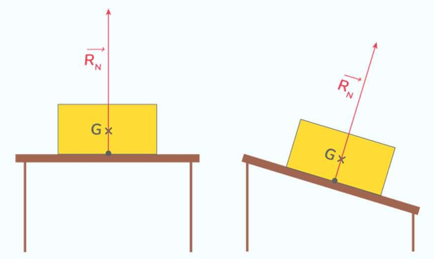
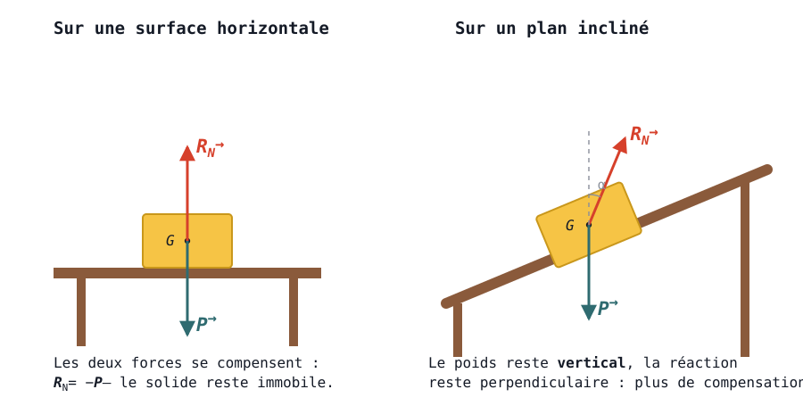

Modéliser une action sur un système
Ce chapitre sera débloqué en fin de séquence, au rythme de la classe. Le code de déblocage est transmis via le cahier de textes — il figure aussi en bas de ta fiche de cours.
Sommaire du chapitre
Physique-Chimie · 2nde · Thème 2 — Mouvements et interactions
Modéliser une action sur un système
Thème 2 · Chapitre 2 — cours & exercices corrigés
01 Actions mécaniques et notion de force
A — Actions mécaniques
Une action mécanique est le nom général donné en physique à toute action exercée par un objet sur un autre.
Une action mécanique peut avoir plusieurs effets sur un objet :
- elle peut le mettre en mouvement ;
- elle peut modifier son mouvement (trajectoire et/ou vitesse) ;
- elle peut le déformer (exemple d'une balle de tennis frappée par la raquette).
Il existe de nombreuses façons d'agir sur un objet, et cette action peut se faire à distance ou par contact.
Donner d'autres exemples d'actions mécaniques par contact et à distance.
Voir la correction
Actions mécaniques par contact : frottements, tension, traction, etc.
Actions mécaniques à distance : attraction gravitationnelle, électricité, magnétisme, etc.
B — Interaction
Deux systèmes sont en interaction s'ils exercent une action mécanique l'un sur l'autre et réciproquement ; le mouvement de chacun dépend de la présence de l'autre.
Chaque système en interaction est représenté, et une double flèche représente l'interaction : trait plein si elle est de contact, pointillé si elle est à distance. Il n'y a pas de limite au nombre d'objets et d'interactions représentés.
Créer le diagramme objets-interactions décrivant la situation montrée sur l'image (un pied frappant un ballon).
Voir la correction
Trois systèmes : le ballon, le pied et la Terre. Le ballon et le pied sont en interaction de contact (trait plein) ; le ballon et la Terre, ainsi que le pied et la Terre, sont en interaction à distance (pointillés).
C — Représenter l'action mécanique par une force
Pour étudier l'effet d'une action mécanique sur un système, il faut pouvoir la modéliser : on utilise pour cela le concept de force. Une force est caractérisée par les éléments suivants :
- son point d'application : l'endroit de l'objet où elle s'exerce. Si l'action est par contact, ce sera le point de contact ; si elle est à distance, on utilise généralement le centre de gravité de l'objet ;
- sa direction (verticale, horizontale, …) : la droite selon laquelle elle s'exerce ;
- son sens, car chaque direction possède 2 sens (haut ou bas, droite ou gauche, …).
Modéliser les actions mécaniques qui s'appliquent sur un avion en vol.
Voir la correction
Quatre forces s'appliquent sur l'avion : le poids (vertical, vers le bas), la portance (vers le haut), la poussée des réacteurs (vers l'avant) et la traînée — frottements de l'air — (vers l'arrière).
La norme d'une force est exprimée en newton (N), en hommage à Isaac Newton, qui a établi les lois des mouvements en 1687. La force est notée par la lettre F surmontée d'une flèche, et suivie du couple « objet qui agit / objet sur lequel on agit ».
Se lit : force exercée par la Terre sur la Pomme.
On représente cette force par une flèche. Il est possible de représenter la longueur de cette flèche proportionnellement à la grandeur de la force, afin de faciliter les comparaisons de force par la suite.
Le pot de fleur subit deux forces ; l'une, R⃗, est déjà représentée. L'autre, P⃗, vaut 10 N, est verticale, orientée vers le bas ; son point d'application est le centre de gravité du système.
1. Représenter la seconde force. 2. Retrouver la norme de la force déjà représentée. 3. En déduire une relation liant les deux forces.
Voir la correction
La norme de R⃗ vaut elle aussi 10 N ; son sens est opposé à celui de P⃗. On en déduit la relation :
P⃗ = −R⃗
02 Principe des actions réciproques
Selon la troisième loi de Newton (ou principe des actions réciproques, ou encore principe d'action / réaction), la force exercée par un système B sur un système A est l'opposée de la force exercée par le système A sur le système B :
FA/B⃗ = −FB/A⃗
Ces deux forces ont donc la même direction, des sens opposés et la même norme.
Pour un objet posé sur un support (ici un ballon posé sur le sol), les deux forces en présence sont généralement le poids de l'objet et la réaction du support (qui fait que l'objet ne s'enfonce pas et ne traverse pas le support). En vertu de la troisième loi de Newton, on peut écrire :
Fsol / ballon⃗ = −FTerre / ballon⃗
La combustion du carburant d'un moteur-fusée provoque son éjection (action), ce qui induit en retour une poussée permettant de faire décoller la fusée (réaction).
Représenter ces forces (il n'y a pas d'échelle à respecter).
Voir la correction
Les deux forces Ffusée / air⃗ (gaz éjectés vers le bas) et Fair / fusée⃗ (poussée vers le haut) sont opposées :
Fair / fusée⃗ = −Ffusée / air⃗
03 Exemples de forces
A — La force d'interaction gravitationnelle
Isaac Newton définit la gravitation de la façon suivante : « Deux objets quelconques exercent entre eux des forces d'interaction, forces attractives, à distance, appelées forces gravitationnelles. » Deux objets sont donc soumis à une interaction attractive réciproque due à leur masse : c'est l'interaction gravitationnelle.
L'interaction gravitationnelle entre deux corps ponctuels A et B est modélisée par des forces d'attraction gravitationnelle FA/B⃗ et FB/A⃗ :
- appliquées au centre du corps attiré : B pour FA/B⃗ et A pour FB/A⃗ ;
- dirigées suivant la droite (AB) ;
- orientées vers le centre du corps attracteur : A pour FA/B⃗ et B pour FB/A⃗ ;
- de normes FA/B et FB/A données par la loi de la gravitation universelle.
Ces deux forces ont la même droite support (direction), des sens opposés et la même intensité (norme).
Pour deux objets sphériques homogènes, on peut calculer la valeur (norme) de la force gravitationnelle :
G constante de gravitation universelle · 6,67×10⁻¹¹ N·m²·kg⁻²
mA, mB masses des corps · kg
dAB distance entre les centres de gravité · m
Calculer la norme de la force d'interaction gravitationnelle entre la Terre et la Lune, puis la représenter sur le schéma.
Données : mTerre = 5,98×10²⁴ kg · mLune = 7,34×10²² kg · dTerre–Lune = 384 400 km
Voir la correction
FA/B = FB/A = G × (mA × mB) / dAB²
FTerre/Lune = FLune/Terre = G × (mTerre × mLune) / dTerre–Lune²
dTerre–Lune = 3,844×10⁵ km = 3,844×10⁸ m.
F = 6,67×10⁻¹¹ × (5,98×10²⁴ × 7,34×10²²) / (3,844×10⁸)²
FTerre/Lune = FLune/Terre ≈ 1,98×10²⁰ N
⚠ Source (diapo 8) : le résultat était noté « ≈ 1,98×10²⁰ kg ». Une force s'exprime en newton (N) : unité corrigée (la valeur numérique, elle, est exacte).
B — Le poids
Que se passe-t-il si l'on applique la formule de la force d'attraction gravitationnelle au voisinage de la Terre ? Prenons le cas d'un objet de masse m à la surface de la Terre, de masse mT : la distance qui sépare les deux objets est alors le rayon de la Terre RT. La force s'écrit :
F = G × (m × mT) / RT2
On réorganise la formule pour isoler ce qui est constant à la surface de la Terre :
F = (G × mT / RT2) × m = g × m ⟹ P = m × g
On appelle cette constante g l'accélération de pesanteur, et la force F devient la force P, appelée poids.
Faire l'application numérique de la partie constante de l'expression précédente pour retrouver la valeur moyenne de g.
Données : RT = 6 380 km · mT = 5,98×10²⁴ kg · G = 6,67×10⁻¹¹ N·m²·kg⁻²
Voir la correction
RT = 6 380 km = 6,380×10⁶ m.
g = G × mT / RT² = (6,67×10⁻¹¹ × 5,98×10²⁴) / (6,380×10⁶)²
g ≈ 9,80 N·kg⁻¹
À la surface d'un astre, comme la Terre, un corps est soumis à une force de pesanteur. Son poids P⃗ est représenté par un vecteur :
- appliqué au centre de gravité G du corps ;
- dirigé à la verticale, suivant la droite reliant G et le centre de l'astre ;
- orienté vers le bas, soit vers le centre de l'astre ;
- de norme P ayant pour expression :
m masse du corps · kg
g accélération de pesanteur · N·kg⁻¹ (ou m·s⁻²)
L'accélération de pesanteur g n'a pas la même valeur selon l'astre sur lequel le corps se trouve. La Terre n'étant pas parfaitement sphérique, g peut aussi varier selon la région : g = 9,81 N·kg⁻¹ à Paris et g = 9,73 N·kg⁻¹ au niveau de l'équateur.
Calculer ton poids à Paris et au niveau de l'équateur. Quantifier l'écart entre les valeurs trouvées.
Données : m = 65,0 kg · gParis = 9,81 N·kg⁻¹ · géquateur = 9,73 N·kg⁻¹
Voir la correction
La masse m = 65,0 kg ne varie pas d'une position à l'autre.
À Paris : PParis = m × gParis = 65,0 × 9,73 ≈ 632 N.
À l'équateur : Péquateur = m × géquateur = 65,0 × 9,81 ≈ 638 N.
Le poids dépend de la position sur Terre.
⚠ Deux points à trancher (source diapo 10) : (1) la correction utilise gParis=9,73 et géquateur=9,81, ce qui inverse les valeurs de l'énoncé/Image 13 (physiquement, g est plus grand à Paris ≈ 9,81 qu'à l'équateur ≈ 9,78) ; (2) l'écart réel entre 632 et 638 N est ≈ 0,8 %, et non « plus de 8 % » comme indiqué dans la source. À revoir en régime B.
Un objet subit une force attractive (poids lunaire) de 1500 N à la surface de la Lune.
Calculer sa masse. Serait-elle la même sur Terre ?
Donnée : gLune = 1,625 N·kg⁻¹
Voir la correction
Plunaire = m × glunaire
mlunaire = Plunaire / glunaire
m = 1500 / 1,625 ≈ 923,1 kg
La masse ne dépend pas du lieu : elle est identique sur Terre, mTerre = mlunaire ≈ 923,1 kg (seul le poids change).
C — Réaction du support
Lorsqu'un corps est en contact avec une surface, il exerce des actions de contact sur cette dernière ; suivant le principe des actions réciproques, elle exerce à son tour une action mécanique sur le solide, appelée réaction du support et notée R⃗.
En l'absence de frottements, cette réaction du support est :
- dirigée perpendiculairement à la surface du support ;
- orientée vers le haut.
Si le corps est immobile sur une surface horizontale, alors la réaction du support compense son poids :
R⃗ = −P⃗
Compléter l'image 14 en ajoutant le poids du système.

Voir la correction
Correction rédigée par Claude — à valider : la source de ce chapitre est la version élève, elle ne contient aucun corrigé.
Dans les deux cas, le poids a les mêmes caractéristiques :
- Direction : verticale ;
- Sens : vers le bas, vers le centre de la Terre ;
- Point d'application : le centre de gravité G ;
- Norme : P = m × g — elle ne change pas non plus.
Le solide est immobile et n'est soumis qu'à deux forces : elles se compensent exactement.
RN⃗ = − P⃗
Le poids ne bascule pas avec le plan : il reste vertical. La réaction du support, elle, reste perpendiculaire au plan, donc inclinée du même angle que celui-ci. Les deux forces ne sont donc plus opposées : leur somme n'est pas nulle.
Sans autre action, le solide glisserait : ce sont les frottements — non représentés ici — qui le retiennent. C'est exactement la situation reprise à l'exercice 11, où un fil joue ce rôle.

D — Tension d'un fil
Lorsqu'un corps est attaché par un lien rigide (barre métallique, …) ou non (fil, câble, …), ce dernier exerce une action mécanique sur le corps, appelée tension et notée T⃗.
Cette tension est :
- dirigée suivant l'axe du lien ;
- orientée du solide vers le lien.
La tension du fil exercée sur un solide accroché au plafond compense ici son poids :
T⃗ = −P⃗
Un solide est attaché sur un plan incliné. Étant immobile, il n'y a pas de frottements.
Indiquer les caractéristiques des forces s'appliquant sur le solide et les représenter, sans souci d'échelle, sur le schéma.
Voir la correction
Le solide subit trois forces : son poids P⃗, la réaction du support R⃗ et la tension du fil T⃗.
Direction : verticale (perpendiculaire au sol) · Point d'application : centre de gravité du solide (G) · Sens : vers le bas (vers le centre de la Terre) · Norme : P = m × g.
Direction : perpendiculaire au support · Point d'application : centre de la surface de contact entre le solide et le support (C) · Sens : vers le haut (vers le solide) · Norme : non donnée.
Direction : colinéaire à l'axe du fil · Point d'application : point de contact entre le fil et le solide (A) · Sens : vers le haut du plan (vers le fil) · Norme : non donnée.
Note : cet exercice est numéroté « Exercice 10 » dans la source (diapo 13), en doublon avec l'exercice « Compléter le schéma » (diapo 11). Renuméroté ici en Exercice 11 pour lever l'ambiguïté.
✓ Pour le DS, je sais :
- 01 · man. 6 p.227
- 01 · man. 10 p.227 · 7 p.227
- 02 · man. 15 p.228 · 16 p.228
- 03 · man. 11 p.227 · 13 p.228
- 03 · man. 21 p.230
- 03 · man. 8 p.227 · 12 p.227
M. Van HoordeLycée général Isaac de l'Étoile · Poitiers